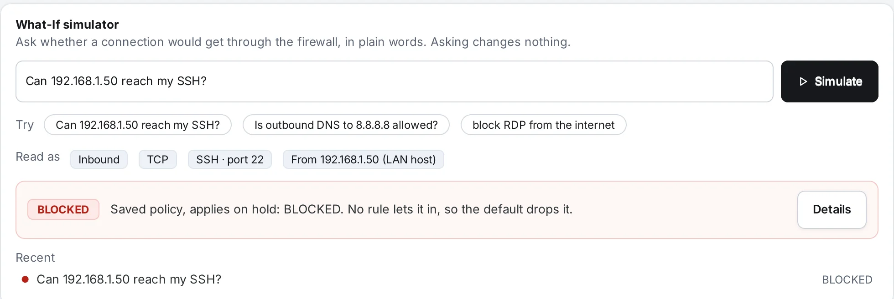
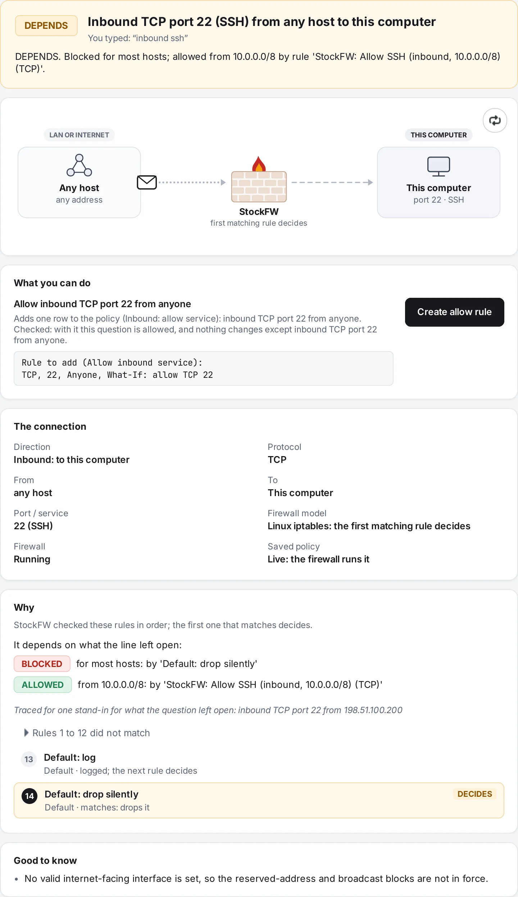
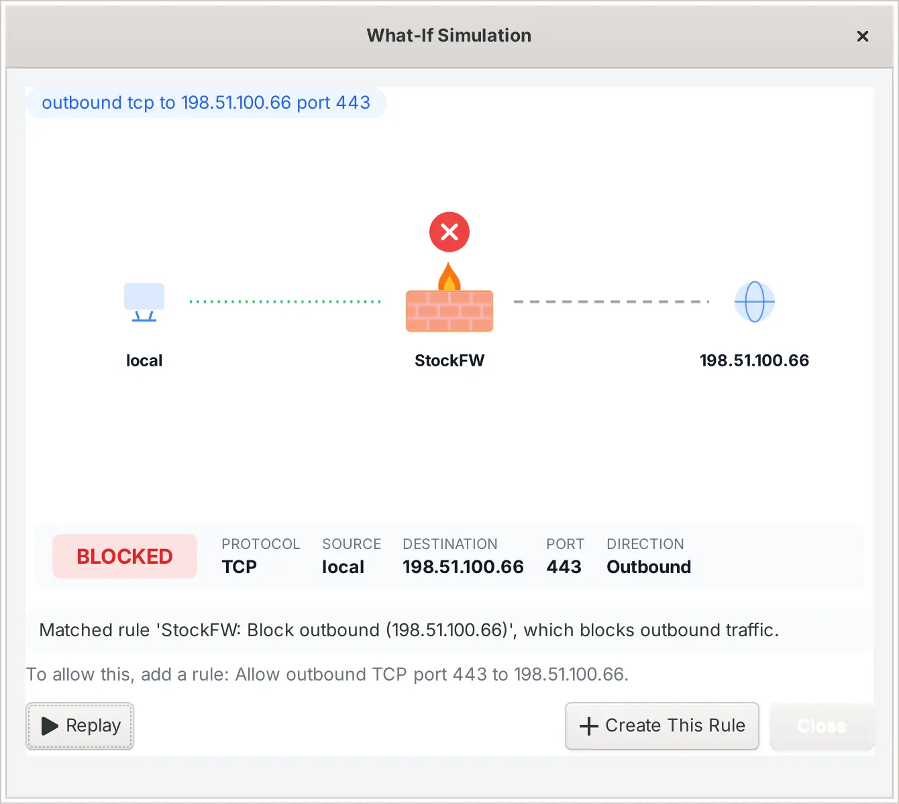

What-if simulator
Type a sentence about a connection and StockFW tells you whether your firewall would allow it or block it, which rule decides, every rule it checked on the way, and what you can do about it. It is a question, not a change: asking writes nothing.
![The What-If window for “Can 192.168.1.50 reach my SSH?”: a green ALLOWED badge, the sentence “Inbound TCP port 22 (SSH) from 192.168.1.50 to this computer”, a diagram of a LAN host sending a packet through the StockFW wall to this computer, a “What you can do” card reading “Nothing to change: this is already allowed”, a “The connection” card with direction, protocol, from, to, port and firewall model, and a “Why” card in which rule 11, “StockFW: Allow SSH (inbound, 192.168.1.50) (TCP)”, is marked DECIDES.](../assets/screens/whatif-allowed.webp)
Where it lives#
At the bottom of the Copilot page, in the dashboard, and as stockfw simulate on the command line. All three run the same engine against the same policy files and the same firewall preferences, and the command-line tests assert that they agree. Verified test-cli.sh
On the Copilot page the card keeps what you typed, so a question is refined rather than retyped. Under the entry, Try offers three example questions, and Read as shows, as chips, how your line was understood: the direction, the protocol, the port or service, the host, and, dashed, anything the line left open. The answer is one row: the verdict badge, one sentence, and Details, which opens the What-If window beside the page. The window is not modal, and asking again refreshes it in place. The last five questions stay listed, each one click from being asked again.

How to phrase a question#
Write it the way you would say it. The parser looks for the pieces below and ignores filler such as please, I want or can you; the order of words does not matter. Everything it recognised is shown back to you as Read as, so what gets evaluated is always what you typed, never a guess. Verified test-whatif.c
| You write | It means |
|---|---|
inbound, incoming, ingress; outbound, outgoing, egress | The direction. Without one, the question is answered both ways, one tab per direction. |
from 192.168.1.50, to 8.8.8.8, reach, access, an address, a network such as 192.168.1.0/, or [2001:db8::5]:443 | The remote end. internet, outside, anyone or anywhere means any host. Without a host, the host is left open. |
port 22, 22 port, :443, or a service name: SSH, RDP, HTTPS, DNS, Telnet | The port. A service name is looked up to its port and protocol (“SSH · port 22”); a number wins over a name when both appear. |
udp, icmp, ping | The protocol. A named service brings its own; a bare port is TCP; ping is ICMP echo request. |
allow, permit, open, let; block, deny, drop, reject | What you want. The answer still says what the firewall does now; the verb decides which fix is offered. “Is … allowed?” and “Can … reach …?” are plain questions. |
Can 192.168.1.50 reach my SSH?
Is outbound DNS to 8.8.8.8 allowed?
block RDP from the internet
allow tcp port 8443 inbound
outbound tcp port 443
ping from 10.0.0.9Whatever a line leaves open stays open. “outbound tcp port 443” names no host, so it is answered for every host your rules distinguish, and when they disagree the verdict is DEPENDS with the split spelled out. A line with nothing recognisable in it is an error, not an “outbound to anywhere” guess: the window says “StockFW could not read this question” and shows how to ask.
How a verdict is reached#
- The line is parsed into a question: direction, protocol, port, host, your verb, and what was left open.
- Everything else that changes the answer is gathered: the Firewall preferences (ICMP types, the reject method, restrictive outbound, interfaces and NAT, the broadcast and reserved-source blocks), whether the firewall is running, whether the saved policy is the one actually loaded, Sentinel’s auto-blocks with their expiry, and on Windows the network profiles in force with their default actions.
- The policy is evaluated by a model of your firewall. Linux The INBOUND and OUTBOUND chains exactly as StockFW writes them, in order; the first rule that matches decides. The model renders itself as iptables lines and the test suite compares those with the real generator’s output, so the two cannot drift apart. Verified test-whatif.c Windows The policy as Windows Firewall rules plus the profile-scoped preference rules; any matching block wins over any allow, and with neither the profile’s default action decides.
- For each field the line left open, a representative of every range a rule draws on that field is tried. If they all agree, that is the answer. If not, the answer is DEPENDS: “Blocked for most hosts; allowed from 10.0.0.0/8 by rule ‘…’”.
- The answer carries the whole trace (every rule checked, skipped or matched), the deciding step, one plain sentence, and the fixes. A fix that would change the policy is offered only after the engine has re-run the question with the new row in place and found exactly the verdict you asked for, with nothing else changed.
The policy it reads is the saved one, so you can rehearse a change before Apply: add a rule, ask, and only then push. When the saved policy is not what the firewall is running, the answer says so first (“Saved policy, applies on hold”), and when the firewall is stopped it says that nothing is filtered right now and what the verdict would be once it runs. Verified ui-simviz-smoke

The window#
The window is one scrolling page of cards.
- The verdict. A badge reading ALLOWED, BLOCKED or DEPENDS, the connection in one sentence (“Inbound TCP port 22 (SSH) from 192.168.1.50 to this computer”), what you typed, and the answer in one line that names the deciding rule. When the answer rests on something that is not the live firewall, an amber strip says so.
- Both ways. A line asked without a direction gets one tab per direction, each with its own verdict.
- The diagram. Where the traffic starts, the StockFW wall, where it is going. Each card says what it is (“This computer”, “LAN host 192.168.1.50”, “Internet host”, “Any host”) and which network it sits on; the far card names the port. The packet plays the verdict: it reaches the wall, and then passes through to a glowing destination, or bounces back off a red wall as the far line turns grey, or waits at an amber wall under a question mark when the answer depends. The round button replays it. With animations off, the final frame is drawn at once. Verified ui-simviz-smoke
- What you can do. The fixes, described below.
- The connection. Direction, protocol, from, to, port or service, the firewall model (“Linux iptables: the first matching rule decides” or “Windows Firewall: any matching block wins”), whether the firewall is running, whether the saved policy is live, and on Windows the profile in force.
- Why. The trace as a numbered list. Rules that did not match are folded into one line (“Rules 1 to 10 did not match”) that opens on a click; the deciding step is highlighted and marked DECIDES; a rule from your policy carries an Open in Policy link to its row. For a DEPENDS answer the cases come first, each with its own badge and the rule that decides it.
- Good to know. Everything the answer had to assume, such as “No valid internet-facing interface is set, so the reserved-address and broadcast blocks are not in force.”
The window does not block the app behind it; Esc or Close dismisses it, and asking another question refreshes it in place. It is drawn with no images, in a light and a dark palette picked from your theme.

What you can do#
Every fix in this card was checked before it was offered, and each has one button.
- Create allow rule or Create block rule, when a single row gives you the verdict you asked for. The exact row is printed under the offer, as the Policy page would show it (“Rule to add (Allow inbound service): TCP, 8443, Anyone, What-If: allow TCP 8443”). A created allow always names one port and one protocol: never portless, never every port for anyone.
- Open rule in Policy, when a rule of yours is what blocks or allows it, so you can edit or remove that rule yourself.
- Lift Sentinel block, with the minutes it has left, when the decision is one of Sentinel’s auto-blocks.
- Open ICMP settings or Open Advanced Options, when a Firewall preference decides, and Start the firewall or Apply policy when the firewall is stopped or the saved policy is not the one loaded.
When nothing is offered, the card says why: “Nothing to change: this is already allowed”; a block that comes before any allow StockFW could add, so the block itself has to change; a built-in rule that keeps the computer working; or a DEPENDS answer that no single change resolves.
Pressing a Create button shows the row once more in a Yes/No dialog. After Yes, the engine checks the row again against the policy as it is by then, writes it, and pushes it through the same apply gate as the Policy page. The result is reported in the window and in the card’s What changed log, and it distinguishes “the row exists” from “the firewall enforces it”, because a rule staged for a later Apply is not yet in force. Verified test_apply_gate

From a script#
$ stockfw simulate "inbound rdp from 203.0.113.50"
BLOCKED. No rule lets it in, so the default drops it.
Read as: host 203.0.113.50; service Remote Desktop: TCP port 3389; inbound (confidence 90%)
Inbound TCP port 3389 (Remote Desktop) from 203.0.113.50 to this computer: BLOCKED
No rule lets it in, so the default drops it.
How it was decided:
- StockFW: Allow inbound (192.168.1.1): 203.0.113.50 is not 192.168.1.1
- StockFW: Allow inbound (192.0.2.10): 203.0.113.50 is not 192.0.2.10
- StockFW: Allow SSH (inbound, 192.168.1.0/24) (TCP): only for port 22
- StockFW: Allow SSH (inbound, 192.168.1.0/24) (UDP): only for UDP; this is TCP
- StockFW: Allow HTTPS (inbound) (TCP): only for port 443
- StockFW: Allow HTTPS (inbound) (UDP): only for UDP; this is TCP
- StockFW: Allow Web (inbound): only for traffic a port forward redirected
* Default: log: logged; the next rule decides
=> Default: drop silently: matches: drops it
[create-allow] Allow inbound TCP port 3389 from 203.0.113.50: Adds one row to the policy (Inbound: allow service): inbound TCP port 3389 from 203.0.113.50. Checked: with it this question is allowed, and nothing changes except inbound TCP port 3389 from 203.0.113.50.
Good to know:
- No valid internet-facing interface is set, so the reserved-address and broadcast blocks are not in force.
A simulation only: nothing was written.
$ echo $?
5The exit status is 0 for ALLOWED, 5 for BLOCKED and 6 for DEPENDS, so a deployment script can refuse to continue when a port it needs would be closed, and a 2 means the line could not be read. --json gives the whole answer as one object: the verdict and summary, the question as read, every direction’s trace, cases and checked actions. --assume-running answers for the firewall as it runs, for scripts that are not root and cannot read the live chains. See the command line reference.
What it does not know#
- It answers from StockFW’s own policy and preferences, not from the engine. A rule someone added directly in
wf.mscor withiptablesis not seen. Known gap - It answers about a new connection. Replies to a connection already open are always allowed, and the trace says so in its first step.
- Threat-intel blocklists and the country and network rules are enforced before the policy, in their own table on Linux and their own rule group on Windows, and the simulator does not consult them: an address a list blocks can be answered ALLOWED here, and the window’s Good to know card says so. The Threat Intel page’s lookup box and
stockfw intel lookupanswer that question. The Copilot knows the difference: a finding about an address a list already blocks offers neither Ask What-If nor a block. Known gap